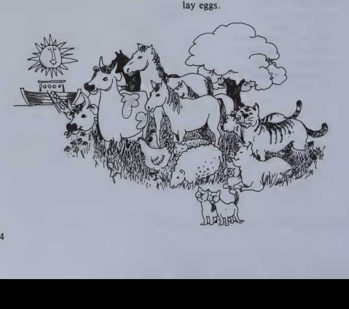
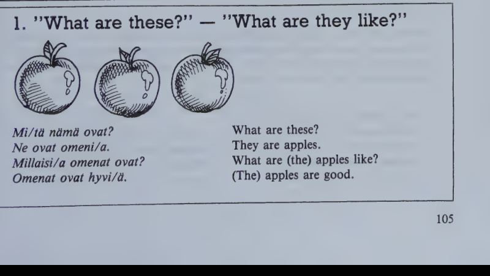
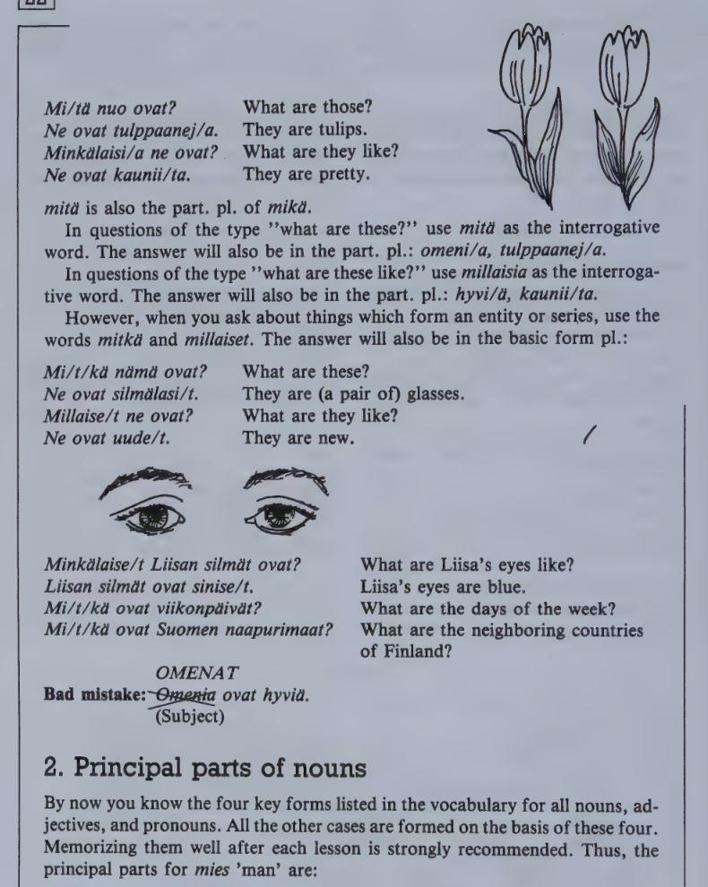
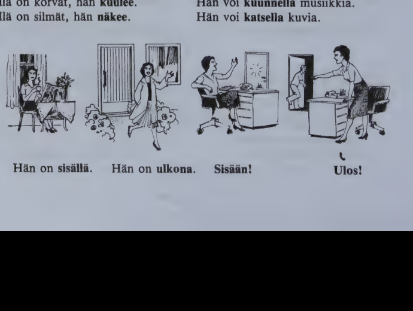
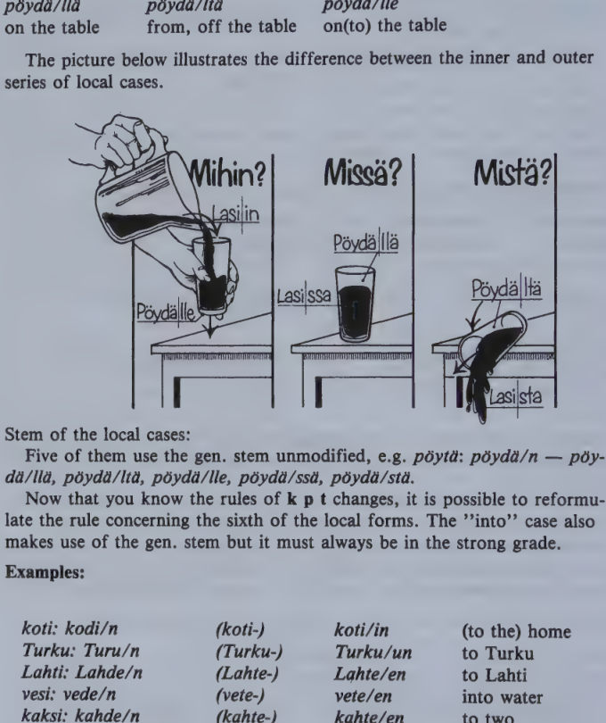

Kappale 22 / Lesson 22#
Mita nama ovat? / What are these?#
Ystavallinen vanha tati katselee kuvia pikku Pekan kanssa.
Suomi |
English |
|---|---|
1. T. No niin, Pekka, katsotaan nyt naita kuvia. Tassa kuvassa on paljon elaimia. Mika elain tama on? |
1. A. Well, Pekka, let’s look at these pictures now. There are lots of animals in this picture. Which animal is this? |
2. P. Se on lehma. |
2. P. It’s a cow. |
3. T. No, minkalainen elain lehma on? |
3. A. Well, what kind of animal is a cow? |
4. P. Se on ruskea. Ja siita tulee maitoa. |
4. P. It’s brown, and milk comes from cows. |
5. T. Mitas nama ovat? |
5. A. What are these? |
6. P. Nekin ovat lehmia. Tuo on hevonen. |
6. P. They’re cows, too. That one is a horse. |
7. T. Se on iso ja kaunis. Mutta katso millaisia nuo hevoset ovat! Miksi ne ovat niin pieni? |
7. A. It’s big and beautiful. But see what those horses are like! Why are they so small? |
8. P. Ne ovat poneja. Ponit ovat pieni, tavalliset hevoset ovat suuria. |
8. P. They are ponies. Ponies are small, ordinary horses are big. |
9. T. Entas nama muut elaimet, mita ne ovat? |
9. A. What about these other animals, what are they? |
10. P. Tama on lammas. Lampaasta tulee villaa. Tuo on sika, siasta tulee lihaa. Nuo ovat kanoja. Kanat munivat. |
10. P. This one is a sheep. Wool comes from sheep. That one is a pig, meat comes from pigs. Those are hens. Hens lay eggs. |
11. T. Ne munivat kauniita valkoisia munia, ja ihmiset syovat niita … Mika tama hirvea elain on, joka on kuin iso kissa? |
11. A. They lay pretty white eggs, and people eat them … What’s this terrible animal which looks like a big cat? |
12. P. Se on tiikeri. Kuule Anna-tati, mennaan joskus yhdessa elaintarhaan. Mina naytan sinulle, mita elaimia siella on. Kun sina et ymmarra elaimista yhtaan mitaan! |
12. P. It’s a tiger. Listen, Aunt Anna, let’s go to the Zoo some time together. I’ll show you what animals they have there. Since you don’t understand anything about animals! |

Minkavarinen ruusu on?
Se on punainen, keltainen tai valkoinen.
Minkavarisia tulppaanit ovat?
Ne ovat punaisia, keltaisia tai valkoisia.
Hevoset ovat usein ruskeita.
Kissa voi olla valkoinen, harmaa tai musta.
Mutta yolla kaikki kissat ovat harmaita.
the colloquial -s:
Mitas kuuluu?
Onkos (onks) Pekka kotona?
Kukas tuolla tulee?
Annas tanne!
Kielioppia / Structural notes#
1. “What are these?” - “What are they like?”#


Finnish |
English |
|---|---|
Mita nuo ovat? |
What are those? |
Ne ovat tulppaaneja. |
They are tulips. |
Minkalaisia ne ovat? |
What are they like? |
Ne ovat kauniita. |
They are pretty. |
mita is also the partitive plural of mika.
In questions of the type “what are these?” use mita as the interrogative word. The answer will also be in the partitive plural: omeni/a, tulppaanej/a.
In questions of the type “what are these like?” use millaisia as the interrogative word. The answer will also be in the partitive plural: hyvi/a, kaunii/ta.
However, when you ask about things which form an entity or series, use the words mitka and millaiset. The answer will also be in the basic form plural:
Finnish |
English |
|---|---|
Mitka nama ovat? |
What are these? |
Ne ovat silmalasit. |
They are (a pair of) glasses. |
Millaiset ne ovat? |
What are they like? |
Ne ovat uudet. |
They are new. |
Minkalaiset Liisan silmat ovat? |
What are Liisa’s eyes like? |
Liisan silmat ovat siniset. |
Liisa’s eyes are blue. |
Mitka ovat viikonpaivat? |
What are the days of the week? |
Mitka ovat Suomen naapurimaat? |
What are the neighboring countries of Finland? |
OMENAT
Bad mistake: Omenia ovat hyvia.
2. Principal parts of nouns#
By now you know the four key forms listed in the vocabulary for all nouns, adjectives, and pronouns. All the other cases are formed on the basis of these four. Memorizing them well after each lesson is strongly recommended. Thus, the principal parts for mies man are:
mies miesta miehen miehia
Tuolla on mies. There is a man over there.
Miehen nimi on Lauri Leino. The man's name is L.L.
Autossa on kaksi miesta. There are two men in the car.
Kadulla on paljon miehia. There are lots of men on the street.
Sanasto / Vocabulary#
Finnish |
English |
|---|---|
elain-ta elaimen elaimia |
animal |
elain/tarha-a-n-tarhoja |
zoo |
hevonen hevosta hevosen hevosia |
horse |
hirvea-(-a)-n hirveita |
terrible |
kana-a-n kanoja |
hen |
-kin (= myos) |
also, too; sometimes an emphasizing suffix |
+lammas-ta lampaan lampaita |
sheep |
lehma-a-n lehmia |
cow |
minka/vari-nen-sta-sen-sia? |
what color? |
muni/a (muni/n-t-i-mme-tte-vat) |
to lay eggs |
no niin |
well, all right |
+naytta/a |
to show; to point; to seem, look (like) |
nayta/n-t nayttaa |
|
nayta/mme-tte nayttavat |
|
poni-a-n poneja |
pony |
-s |
nearly meaningless suffix generally used in colloquial speech |
+sika-a sian sikoja |
pig, hog, swine |
tiikeri-a-n tiikereita |
tiger |
+tati-a tadin tateja |
aunt, auntie; (in children’s language) lady, woman |
villa-a-n villoja |
wool |
vari-a-n vareja |
color |
yhdessa |
together, with |
ystavalli/nen-sta-sen-sia |
friendly, kind |
Vareja / Colors#
Finnish |
English |
|---|---|
harmaa-ta-n harmaita |
grey |
keltai/nen-sta-sen-sia |
yellow |
punai/nen-sta-sen-sia |
red |
ruskea-(-a)-n ruskeita |
brown |
sini/nen-sta-sen-sia |
blue |
vaalean/punainen |
pink |
valkoi/nen-sta-sen-sia |
white |
vihrea-(-a)-n vihreita |
green |
Kappale 23 / Lesson 23#
Matti Suomelan paivaohjelma (I) / Matti Suomela’s daily program (I)#
Suomi |
English |
|---|---|
1. Mihin aikaan sina nouset aamulla? |
1. What time do you get up in the morning? |
2. Mina nousen aina seitsemalta. Mina syon aamiaista puoli kahdeksalta. |
2. I always get up at seven. I have breakfast at half past seven. |
3. Mita sina syot aamiaiseksi? |
3. What do you eat for breakfast? |
4. Mina syon voileipaa ja juon teeta. |
4. I eat bread and butter and I drink tea. |
5. Etko sina juo kahvia? |
5. Don’t you drink coffee? |
6. En. Mina en pida kahvista, vaikka suomalaiset tavallisesti pitavat siita. |
6. No, I don’t. I don’t like coffee, although Finns usually like it. |
7. Milloin sina menet tyohon? |
7. When do you go to work? |
8. Kello yhdeksan, samoin kuin vaimoni. Me olemme tyossa samassa toimistossa. |
8. At nine, like my wife. We work at the same office. |
9. Kuinka kauan sina olet tyossa? |
9. How long do you work? |
10. Kolme tuntia aamupaivalla, nelja iltapaivalla. Lauantaina mina en ole tyossa. |
10. Three hours in the morning, four in the afternoon. I don’t work on Saturday. |
11. Syotko sina lounasta kotona? |
11. Do you have lunch at home? |
12. Lounasta me emme syo koskaan kotona. Lapset syovat koulussa, me vanhemmat lahimmassa ravintolassa. |
12. We never have lunch at home. The children eat at school; we parents eat at the nearest restaurant. |
13. Milloin teidan perheessa on paivallinen? |
13. When do you have dinner in your family? |
14. Viidelta, paitsi sunnuntaina. |
14. At five, except on Sunday. |
15. Mita sina teet paivallisen jalkeen? |
15. What do you do after dinner? |
16. Joskus mina teen tyota, joskus lepaan. Usein mina autan vaimoani. Sitten mina luen sanomalehtia tai kirjoja tai kirjoitan kirjeita. Minusta lukeminen on hauskaa, mina pidan lukemisesta. |
16. Sometimes I work, sometimes I rest. I often help my wife. After that I read the papers or read books or write letters. I think reading is fun, I like reading. |
Pidan kahvista, mutta en pida teesta.
en valita
tehda tyota to work, not to be idle
olla tyossa to work outside the home, have a job (colloq. olla toissa)
Kielioppia / Structural notes#
1. More expressions of time#
Finnish |
English |
|---|---|
aamu |
morning |
aamulla |
in the morning |
paiva |
day |
paivalla |
during the day |
ilta (illan) |
evening |
illalla |
in the evening |
yo |
night |
yolla |
at night |
Finnish |
English |
|---|---|
mihin aikaan? |
(at) what time? |
(kello) kahdelta |
at two o’clock |
kello kaksi (colloq.) |
at two o’clock |
puoli neljalta |
at half past three |
kello puoli nelja |
at half past three |
But, according to the 24-hour system:
Bussi lahtee 14.30 (ei puoli viisitoista).
2. “to like” in Finnish#
Finnish |
English |
|---|---|
Mista sina pidat? |
What do you like? What are you fond of? |
Pidan musiikista, tyosta, matkustamisesta ja perheestani. |
I like music, work, traveling, and my family. |
With the verb pitaa to like, be fond of, Finnish idiomatically uses the “out of” case; likewise with the verbs tykata (tykkaan) to like (colloq.) and valittaa (valitan) to care:
Finnish |
English |
|---|---|
Tykkaatko sina saunasta? |
Do you like the sauna? |
En, mina en paljon valita siita. |
No, I don’t care for it much. |
3. k p t changes (“consonant gradation”)#
k p t changes occur, as you will have noticed by now, in the inflection of both nouns and verbs and are very characteristic of the Finnish language.
k, p, t are subject to these regular changes either alone or in combination with certain other consonants.
sp, st, sk, tk are not subject to k p t changes.
The “strong grade” occurs when the following syllable is open (ends in a vowel). The “weak grade” occurs when the following syllable is closed (ends in a consonant).
strong |
weak |
example |
English |
example |
English |
|---|---|---|---|---|---|
pp |
p |
kauppa |
shop |
kaupat |
shops |
p (lp, rp) |
v (lv, rv) |
leipa |
bread |
leivan |
bread’s |
mp |
mm |
kampa |
comb |
kammat |
combs |
tt |
t |
ottaa |
to take |
otamme |
we take |
t (ht) |
d (hd) |
katu |
street |
kadut |
streets |
lt, rt |
ll, rr |
ilta |
evening |
illalla |
in the evening |
nt |
nn |
hinta |
price |
hinnat |
prices |
kk |
k |
Mikko |
Michael |
Mikon |
Michael’s |
k (lk, rk) |
- (l-, r-) |
lukea |
to read |
luette |
you read |
hk |
h(k) |
nahka |
leather |
nah(k)an |
leather’s |
hke, lke, rke |
hje, lje, rje |
sulkea |
to close |
suljettu |
closed |
nk |
ng |
Helsinki |
Helsingissa |
in Helsinki |
Notes:
aika time :ajan
poika boy :pojat
vaaka scales :vaa'at; the apostrophe is used when k disappears between two identical vowels.
suku family :suvut; k changes to v (instead of disappearing) to avoid confusion with suut mouths; this is also the case with a few other nouns ending in -uku (-yky).
Why Turkuun, Helsinkiin?
If the closed syllable contains a long vowel, there is always strong grade.
The principle of strong grade in the open, and weak grade in the closed syllable does not always apply in modern Finnish. If the student remembers the principal parts of the words and which stems are used to make the different forms, he will produce language with correct grades of k p t changes.
Sanasto / Vocabulary#
Finnish |
English |
|---|---|
aamiai/nen-sta-sen-sia |
breakfast |
aamu/paiva-a-n-paivia |
(late) morning |
+aika-a ajan aikoja |
time |
mihin aikaan? |
(at) what time? |
+autta/a |
to help, aid, assist |
auta/n-t auttaa |
I help you, him |
auta/mme-tte auttavat |
|
ilta/paiva-a-n-paivia |
afternoon |
jalkeen (+ gen.) |
after |
paivallisen jalkeen |
after dinner |
kauan |
for a long time |
kirje-tta-en-ita |
letter (in correspondence) |
koskaan (= milloinkaan) |
ever |
ei koskaan (= ei milloinkaan) |
never |
+lehti lehtea lehden lehtia |
newspaper, magazine; leaf |
+leva/ta (lepa/n-t lepaa/mme-tte-vat) |
to rest |
lounas-ta lounaan lounaita |
lunch; south-west |
lukemi/nen-sta-sen-sia |
reading, something to read |
ohjelma-a-n ohjelmia |
program |
paitsi |
besides; except |
+pita/a |
to like, be fond of |
pida/n-t pitaa |
I like you |
pida/mme-tte pitavat |
|
paivalli/nen-sta-sen-sia |
dinner |
+sanoma/lehti |
newspaper |
+teh/da tyota |
to work |
toimisto-a-n-ja |
office, bureau |
+tunti-a tunnin tunteja |
hour; lesson, class |
vaikka |
although, even if |
+vanhemmat vanhempia vanhempien |
parents |
+voi/leipa-a-leivan-leipia |
bread and butter; sandwich |
+tyka/ta (tykkaa/n-t tykkaa/mme-tte-vat) |
(colloq.) to like, be fond of |
+valitta/a |
to care for, about |
valita/n-t valittaa |
I don’t care for reading |
valita/mme-tte valittavat |
Kappale 24 / Lesson 24#
Matti Suomelan paivaohjelma (II) / Matti Suomela’s daily program (II)#
Suomi |
English |
|---|---|
1. Kuinka te vietatte iltanne? |
1. How do you spend your evenings? |
2. Mina katselen aika paljon televisiota. Vaimoni ei valita siita, paitsi kun on oikein hyva ohjelma. Han haluaa kuunnella radiota. |
2. I watch television quite a lot. My wife doesn’t care for it, except when there is a very good program. She wants to listen to the radio. |
3. Menetteko te usein ulos? |
3. Do you often go out? |
4. Me olemme paljon kotona. Joskus me menemme teatteriin, elokuviin ja niin edelleen. |
4. We stay a lot at home. Sometimes we go to the theater, the cinema, and so on. |
5. Pidatteko te musiikista? |
5. Do you like music? |
6. Kylla. |
6. Yes, we do. |
7. Minkalaisesta musiikista te pidatte? |
7. What kind of music do you like? |
8. Kaikesta hyvasta musiikista. Meilla on levysoitin ja paljon hyvia levyja. Ja kasetteja. Me kuuntelemme niita usein illalla, ennen kuin menemme nukkumaan. |
8. All good music. We have a record-player and many good records. And cassettes. We often listen to them in the evening before we go to bed. |
9. Ja milla tavalla suomalaiset viettavat viikonloppua? |
9. And in what manner do Finns spend their weekends? |
10. Eri ihmiset eri tavalla. Monet menevat maalle. Nuoret menevat tanssimaan lauantai-iltana. Sunnuntaina me emme nouse kovin aikaisin, vaan nukumme myohaan. Muutamat menevat kirkkoon. Iltapaivalla me menemme ehka kylaan, tai meille tulee vieraita. Jos ilma on kaunis, olemme paljon ulkona. |
10. Different people in different ways. Many people go to the country. Young people go dancing on Saturday night. We don’t get up very early on Sunday, we sleep late. Some people go to church. In the afternoon we may visit friends, or we have guests. If the weather is fine, we stay outdoors a great deal. |
Ihmisella on korvat, han kuulee.
Ihmisella on silmat, han nakee.
Han voi kuunnella musiikkia.
Han voi katsella kuvia.

Kielioppia / Structural notes#
1. syomaan, syomassa#
Finnish |
English |
|---|---|
Lapset, tulkaa syo/maan! |
Children, come and eat! |
Mina menen nukku/maan. |
I’ll go to bed (lit. “to sleep”). |
Mihin sina menet? Tanssi/maan. |
Where are you going? I’m going dancing. |
Missa lapset ovat? Syo/massa. |
Where are the children? They’re eating. |
Vauva on nukku/massa. |
The baby is sleeping. |
Forms like syo/maan, tanssi/maan express what people will go and do. They occur in connection with verbs of motion like menna and tulla.
Structure: stem from 3rd pers. pl. present tense + maan (maan)
syoda syo/vat menna syo/maan
tavata tapaa/vat tulla tapaa/maan
Forms like syo/massa, nukku/massa, usually in connection with the verb olla, express in what action people are engaged at the moment referred to.
Note that the use of this form is largely concentrated on certain concrete situations (olla syomassa, nukkumassa, lepamassa, uimassa, hiihtamassa, tanssimassa etc.). It is far less frequent than the English “to be doing something”. Remember that, most often, the Finnish for “I’m doing, reading, thinking” etc. is simply mina teen, luen, ajattelen etc.
Structure: stem from 3rd pers. pl. present tense + massa (massa)
syoda syo/vat olla syo/massa
tavata tapaa/vat olla tapaa/massa
2. The six local cases#
This is a review of the six local cases of nouns. Three of them refer to the inside of things (inner local cases):
Finnish |
English |
|---|---|
lasi/ssa |
in the glass |
lasi/sta |
out of the glass |
lasi/in |
into the glass |
Three, on the other hand, refer to the outside of things (outer local cases):
Finnish |
English |
|---|---|
poyda/lla |
on the table |
poyda/lta |
from, off the table |
poyda/lle |
on(to) the table |
The picture below illustrates the difference between the inner and outer series of local cases.

Stem of the local cases:
Five of them use the gen. stem unmodified, e.g. poyta: poyda/n -> poyda/lla, poyda/lta, poyda/lle, poyda/ssa, poyda/sta.
Now that you know the rules of k p t changes, it is possible to reformulate the rule concerning the sixth of the local forms. The “into” case also makes use of the gen. stem but it must always be in the strong grade.
Examples:
Basic form |
Stem |
Illative |
English |
|---|---|---|---|
koti: kodi/n |
(koti-) |
koti/in |
(to the) home |
Turku: Turu/n |
(Turku-) |
Turku/un |
to Turku |
Lahti: Lahde/n |
(Lahte-) |
Lahte/en |
to Lahti |
vesi: vede/n |
(vete-) |
vete/en |
into water |
kaksi: kahde/n |
(kahte-) |
kahte/en |
to two |
parempi: paremma/n |
(parempa-) |
parempa/an |
into a better … |
kolmas: kolmanne/n |
(kolmante-) |
kolmante/en |
into the third … |
Sanasto / Vocabulary#
Finnish |
English |
|---|---|
aikaisin (# myohaan) |
early (= at an early hour) |
edelleen |
on, onward, further |
ja niin edelleen (jne.) |
and so on (etc.) |
elo/kuva-a-n-kuvia |
moving picture, movie, film |
ennen kuin |
before (when beginning a clause) |
eri (indecl.) (# sama) |
different (= not the same) |
kovin (= hyvin, oikein) |
very |
+kuunnel/la (kuuntele/n-t-e-mme-tte-vat) |
to listen to, listen in |
kuuntelen musiikki/a, radio/ta |
I listen to music, to the radio |
kyla-a-n kylia |
village |
menna kylaan |
go and visit people, friends |
levy-a-n-ja |
plate; disc; record |
+levy/soitin-ta-soittimen-soittimia |
record-player |
myohaan (# aikaisin) |
late |
+nukku/a |
to sleep |
nuku/n-t nukkuu |
|
nuku/mme-tte nukkuvat |
|
menna nukkumaan |
to go to bed |
tanssi-a-n tansseja |
dance, dancing |
+tapa-a tavan tapoja |
way, manner, habit, custom |
milla tavalla? |
in what manner, what way? |
vaan |
but (only after neg. sentence) |
vieras-ta vieraan vieraita |
unknown; guest; pl. party |
+vietta/a |
to spend, pass time; celebrate |
vieta/n-t viettaa |
|
vieta/mme-tte viettavat |